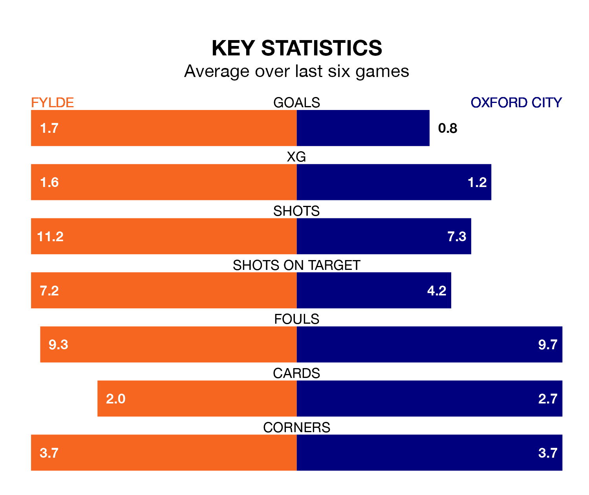

Fylde are heavy favourites to keep all three points at home in Saturday's kick-off against Oxford City.
The Coasters, who sit 17th in the National League with 40 games played, are priced at 1.3 to seal victory at the Mill Farm Stadium.
Sitting seven places and 17 points behind them in the table, Oxford are 7.1 to win with *Betting Company*, while the draw is at 5.5.
Fylde are in mixed form in the National League, with two wins and a draw from their last six games.
With no wins and a draw over that period, Oxford's form is much worse – they have taken one point from 18, compared to the Coasters's seven.
With 50 goals in 40 games so far this season, City are scoring at below the league average rate with 1.2 goals per game. And they are conceding more than average, letting in 85 goals at a rate of 2.1 per game.
The home team, meanwhile, are above average scorers, with 1.6 goals per game, compared to a league average of 1.5. They have conceded 1.8 goals per game.
Fylde's last match was on March 16, a 2-1 loss against Wealdstone, with Nicholas George Haughton getting the goal for the Coasters.
Oxford lost 2-0 against Halifax Town last time out, on Sunday.
Updated: 10:19 (UTC), 22/03/24